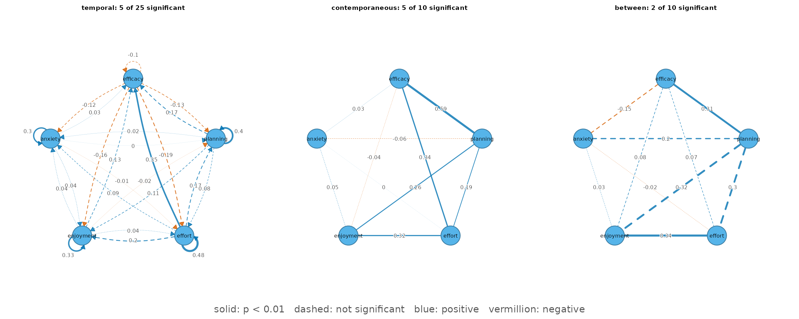
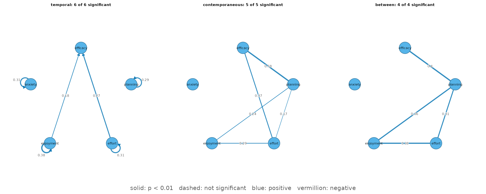

Panel graphical VAR: temporal, contemporaneous, and between-person networks
Source:vignettes/panel-graphical-var.Rmd
panel-graphical-var.RmdWhat the model estimates
Panel data measure the same people a few times. The panel graphical vector-autoregressive model (panel-GVAR; Epskamp, 2020) splits each person’s scores into a stable personal level and week-to-week deviations from it, and estimates three networks:
- a temporal network: does being above one’s own level on one variable in one wave predict the next wave? Arrows are lag-1 effects; self-loops are autoregressive (carry-over) effects.
- a contemporaneous network: which deviations move together within a wave, after the lagged effects (partial correlations)?
- a between-person network: how are the stable personal levels related (partial correlations)?
panel_gvar() fits the model of
psychonetrics::panelgvar() by maximum likelihood, entirely
in base R, and certifies the optimum.
The data
srl_panel is a synthetic panel of 100 students measured
in four consecutive weeks on five self-regulated-learning indicators
(0-100 scales). It was simulated from a panel-GVAR whose structure was
taken from real experience-sampling data, so it is realistic and fully
shareable (see ?srl_panel). The data are in long format:
one row per student per week.
head(srl_panel)
#> student week efficacy planning effort enjoyment anxiety
#> 1 S001 1 38.7 54.1 52.1 53.1 44.2
#> 2 S001 2 32.9 55.4 50.7 62.2 48.8
#> 3 S001 3 34.5 40.9 52.9 50.3 36.9
#> 4 S001 4 28.6 44.5 41.0 42.4 39.6
#> 5 S002 1 45.0 54.7 48.6 48.1 38.4
#> 6 S002 2 62.8 67.2 63.7 47.5 44.8
vars <- c("efficacy", "planning", "effort", "enjoyment", "anxiety")The full model
By default every edge is estimated and reported with its standard error and p-value; nothing is removed.
fit <- panel_gvar(srl_panel, vars = vars, id = "student", wave = "week")
fit
#> <psychnet_panelgvar> panel graphical VAR (temporal + contemporaneous + between)
#> persons: 100 waves: 4 nodes: 5
#> edges (significant/estimated, p < 0.01): temporal 1/20 (+4/5 autoregressive) contemporaneous 5/10 between 2/10
#> selection: none (full model)
#> fit: chisq(170) = 207.19, p = 0.0273 CFI = 0.957 TLI = 0.946 RMSEA = 0.047
#> optimality (ML score): 8.16e-13
#> starts: 3 of 3 reached the best saturated optimumThe edge table has one row per edge, with a 95% Wald interval and a
significant flag at alpha = 0.01:
head(as.data.frame(fit), 8)
#> network from to weight se p ci_lower
#> 1 temporal anxiety anxiety 0.296628278 0.10027278 0.003094278 0.1000972
#> 2 temporal anxiety efficacy 0.026009263 0.08031053 0.746045017 -0.1313965
#> 3 temporal anxiety effort -0.014936851 0.08549642 0.861309611 -0.1825068
#> 4 temporal anxiety enjoyment 0.036480078 0.08218780 0.657142045 -0.1246051
#> 5 temporal anxiety planning 0.003375992 0.07857850 0.965730789 -0.1506350
#> 6 temporal efficacy anxiety -0.122338773 0.13119129 0.351066802 -0.3794690
#> 7 temporal efficacy efficacy -0.096672635 0.13467200 0.472857381 -0.3606249
#> 8 temporal efficacy effort -0.185033790 0.13554948 0.172232751 -0.4507059
#> ci_upper significant
#> 1 0.4931593 TRUE
#> 2 0.1834150 FALSE
#> 3 0.1526331 FALSE
#> 4 0.1975652 FALSE
#> 5 0.1573870 FALSE
#> 6 0.1347914 FALSE
#> 7 0.1672796 FALSE
#> 8 0.0806383 FALSE
summary(fit)
#> network directed nodes edges significant mean_abs_weight
#> 1 temporal TRUE 5 20 1 0.1046718
#> 2 contemporaneous FALSE 5 10 5 0.1877681
#> 3 between FALSE 5 10 2 0.1831649plot() draws the three networks on one layout.
Solid edges are significant, dashed edges are not; blue
is positive, vermillion negative, and the weight is printed on each
edge.
plot(fit)
Reading the significant edges:
- Temporal. 4 of the 5 autoregressive effects are significant (anxiety -> anxiety (0.30), effort -> effort (0.48), enjoyment -> enjoyment (0.33), planning -> planning (0.40)): a student who is above their own level in one week tends to stay above it the next. One lagged effect between variables is significant: effort -> efficacy (0.35).
- Contemporaneous. 5 edges (efficacy-effort (0.34), efficacy-planning (0.59), effort-enjoyment (0.32), planning-effort (0.19), planning-enjoyment (0.26)): in weeks when a student’s efficacy, planning, effort and enjoyment are above their usual level, they rise together. Anxiety is not connected.
- Between-person. 2 edges (efficacy-planning (0.31), effort-enjoyment (0.34)): students with a higher personal level of efficacy tend to have a higher personal level of planning; students with a higher personal level of effort tend to have a higher personal level of enjoyment. Between-person edges are estimated from only 100 personal levels, so they carry more uncertainty than the within-person ones.
Selecting edges
Marking significance does not change the model. To report a sparser
network, panel_gvar() offers two selection methods.
select = "prune" removes every edge with p > 0.01 in
one pass, refits, and then runs a step-up search that
adds edges back while they significantly improve the model and lower BIC
(psychonetrics’ prune() followed by stepup()).
The step-up matters: edges that stand in for each other, such as an
autoregression and a correlated lagged effect, can each look unnecessary
while the other is present, and one-pass pruning would remove both.
pruned <- panel_gvar(srl_panel, vars = vars, id = "student", wave = "week",
select = "prune")
pruned
#> <psychnet_panelgvar> panel graphical VAR (temporal + contemporaneous + between)
#> persons: 100 waves: 4 nodes: 5
#> edges (significant/estimated, p < 0.01): temporal 2/2 (+4/4 autoregressive) contemporaneous 5/5 between 4/4
#> selection: prune (alpha = 0.01, adjust = none; stepup (bic) re-added 3)
#> fit: chisq(200) = 227.13, p = 0.0913 CFI = 0.969 TLI = 0.966 RMSEA = 0.037
#> optimality (ML score): 5.41e-13
#> starts: 3 of 3 reached the best saturated optimumThe pruned model keeps 4 autoregressive effects, 2 lagged effects between variables, 5 contemporaneous and 4 between-person edges. The step-up search re-added 3 of the edges that one-pass pruning had removed, and the sparser model still fits acceptably (CFI = 0.969, RMSEA = 0.037).
plot(pruned)
select = "ebic" instead shrinks edges with a lasso
penalty chosen by EBIC – the panel counterpart of
ebic_glasso() (psychonetrics’
panelgvar(estimator = "PML")). Weak edges become exactly
zero in one optimization. The estimates are penalized, so they carry no
p-values (refit = TRUE refits the selected network without
the penalty). A shorter penalty path keeps this example fast:
lasso <- panel_gvar(srl_panel, vars = vars, id = "student", wave = "week",
select = "ebic", nlambda = 20)
summary(lasso)
#> network directed nodes edges significant mean_abs_weight
#> 1 temporal TRUE 5 2 NA 0.1436679
#> 2 contemporaneous FALSE 5 5 NA 0.3385725
#> 3 between FALSE 5 0 NA 0.0000000The lasso keeps the temporal and contemporaneous structure but no between-person edge: with 100 students the penalty is more conservative than the significance-based selection for the between-person network.
When wave means drift
The model assumes stationary means: the average
level of each variable does not change across waves. If it drifts (for
instance a steady decline across a term),
standardize = "z_per_wave" z-scores every variable within
every wave, which removes the drift; the edges are then
standardized.
z_fit <- panel_gvar(srl_panel, vars = vars, id = "student", wave = "week",
standardize = "z_per_wave")
subset(as.data.frame(z_fit, what = "fit"), select = c(chisq, df, cfi, rmsea))
#> chisq df cfi rmsea
#> 1 182.507 170 0.9851576 0.02712385Fit and diagnostics
Fit indices compare the model with the saturated model and with a baseline without temporal or network structure:
as.data.frame(fit, what = "fit")
#> logl npar df chisq pvalue baseline_chisq baseline_df cfi
#> 1 -6802.528 60 170 207.1872 0.02733013 1084.025 215 0.9572082
#> tli rmsea aic bic
#> 1 0.9458809 0.04677052 13725.06 13881.37The diagnostics report the optimality certificate (the largest remaining gradient of the likelihood, ~0 at the optimum), whether any part of the solution sits on a boundary of the parameter space, whether standard errors exist, and how many of the three optimizer starts reached the best optimum:
as.data.frame(fit, what = "diagnostics")
#> n waves score boundary boundary_part se_available starts_agree
#> 1 100 4 8.159029e-13 FALSE <NA> TRUE 3
#> starts
#> 1 3The variance split shows how much of each variable is stable between students and how much fluctuates within them:
as.data.frame(fit, what = "variance")
#> variable between within share_between
#> 1 efficacy 65.39817 66.42409 0.4961087
#> 2 planning 72.92447 57.68286 0.5583490
#> 3 effort 82.63922 69.22678 0.5441588
#> 4 enjoyment 53.83746 65.44361 0.4513496
#> 5 anxiety 95.00513 59.25030 0.6158949Reference
Epskamp, S. (2020). Psychometric network models from time-series and panel data. Psychometrika, 85(1), 206-231. doi:10.1007/s11336-020-09697-3